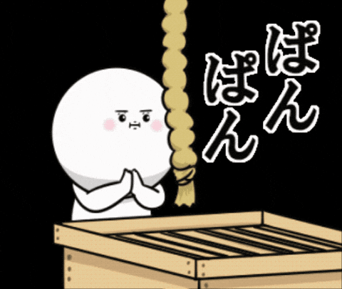

WHAT IS GOSHUIN?
御朱印とは神社や寺院を参拝した証としていただくことができる印章です。 墨書きと朱印によって作られ、それぞれ異なる魅力があります。 近年では美しいデザインの御朱印も増え、御朱印巡りを趣味とする人も多くなっています。

THE CHARM OF GOSHUIN
御朱印巡りでは各地の神社や寺院を訪れ、その土地の歴史や文化に触れることができます。 また御朱印帳に記録することで旅の思い出として残すことができ、日本文化をより深く知るきっかけにもなります。